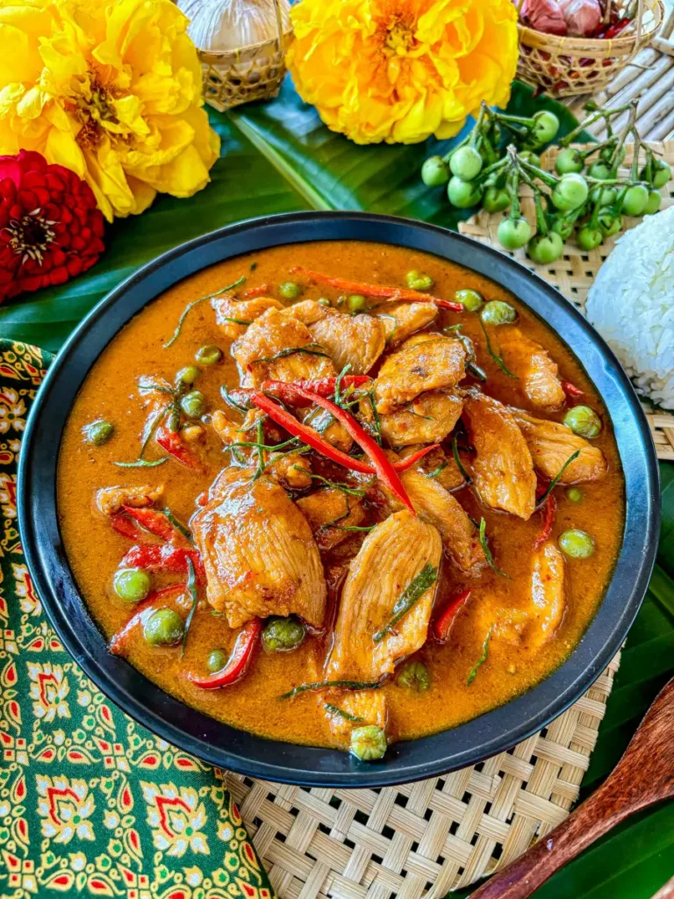

Thai Gaeng Panang Gai Chicken Curry

Gaeng Panang Gai
Classic Thai curry features a sweet, salty and zesty sauce, with many layers of rich flavour and spice. Serves 4.
Ingredients
- Coconut milk (1L)
- Panang curry paste (4 tbsp)
- Chicken thighs, thinly sliced (600g)
- Pea eggplants Optional (100g)
- Palm sugar (or brown) (4 tbsp)
- Fish sauce (2tbsp)
- Salt (1tsp)
- Medium/Low spice Chillies x4
- Kaffir lime leaves x6
Steps
- Reduce half of the coconut milk in your wok or pot over medium heat until it's thick and oil begins to separate.
- Add panang curry paste and stir well until the coconut milk is fully infused with the spices.
- Add the remaining coconut milk, chicken, and pea eggplants along with sauces and seasonings - palm sugar, fish sauce, and salt. Let the curry simmer for 3-5 minutes, or until the chicken is cooked.
- Lastly, turn off the heat and add kaffir lime leaves strips and sliced chilies. Serve immediately with rice.
Home